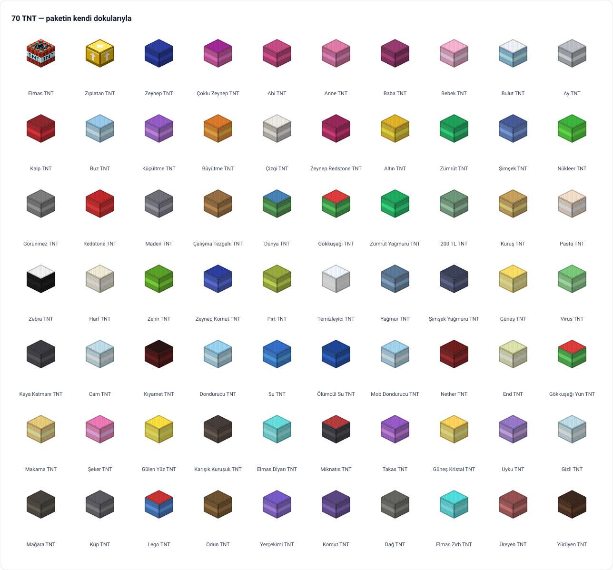

Minecraft Bedrock eklentisi · tablet ve telefon · açık kaynak
Fikir çocuklardan, kod babadan.
"Patlayınca etrafa kağıt saçan TNT", "kazınca patlayan kum", "herkesi minik yapan top". Her fikir bir akşam yazılıyor, ertesi gün tablette deneniyor, olmayanı çocuklar söylüyor. Böyle böyle bir TNT modu Zeynep TNT'den Kıyamet TNT'ye 70 patlayıcıya, kılık değiştirmeye ve dev canavarlara büyüdü.

Bir Bedrock Add-On: tek dosya, SuperTNT.mcaddon. Tabletteki Minecraft'a bir dokunuşla eklenir; çoğu TNT'nin tarifi aynıdır — çevrede 8 malzeme, ortada bir TNT.
70 TNT
Elmas TNT dev krater açar, Zıplatan TNT her şeyi gökyüzüne fırlatır, Buz TNT 14 blok yarıçapı dondurur, Şimşek TNT 20 yıldırım çağırır, Zeynep TNT etrafa kağıt saçar. Her birinin ipucu üzerinde yazar.
Tuzak bloklar
Hayalet Blok, Sahte TNT, Yakınlık Mayını, Patlayıcı Kum, Zehir Toprağı, Kilitli ve Şifreli Sandık, Herobrine Çağırıcı — bir sonraki odayı kuran ve bozan bloklar.
Sihirli eşyalar
Portal Silahı, Küçültme ve Büyütme Topu, Kanca, Lazer Kılıcı, Craft Baltası, Kontrol Kumandası: her biri bir çocuğun "şöyle bir şey olsa" dediği şey.
135 kılık
Dönüşüm Asası'yla bir hayvana, canavara, deve ya da bloğa dönüş. Hareket ve güç o canlınındır; Blok Kılığı elindeyken kırdığın bloğa dönüştürür.
Dört dev canavar
Ender Send, Dev Zombi, Dev Creeper ve Mutant Warden — canları ve hasarları katalogda, kılıkları asada.
Tablete kablosuz
./ctl deploy tablet paketi derler, bağlı her tablete gönderir, Samsung'un dosya kaydını temizler; ertesi gün deneme böyle başlar.
Nasıl oynanır
Tarif, ateşleme, komut, kılık — dört adım.
- Tarif
Çevrede 8 malzeme, ortada normal TNT:
M M M / M T M / M M M→ 1 özel TNT. Hangi malzeme hangi TNT, katalogda. TNT Frizbi, TNT Kapı, Şifreli TNT Sandık ve Portal Silahı'nın tarifi kendine özgüdür. - Ateşle
Çakmakla sağ tık, redstone sinyali (kaldıraç, buton, basınç plakası) ya da yandaki bir patlama. Blok kaybolur, yerine sıçrayan, yuvarlanan, yanıp sönen bir TNT doğar; 4 saniye sonra patlar.
- Komut
Yaratıcı modda ya da hile açıkken
/give @s stnt:diamond_tnt,/give @s stnt:zeynep_tnt,/give @s stnt:portal_silahi. Kimlikler katalogdaki isimlerin karşılığı. - Kılık değiştir
Dönüşüm Asası'nı eline al, bir kılık seç. Küçültme Topu'nu ayağının dibine at: minicik olursun; Kalp TNT ya da Normal Boyut Topu geri alır.
Kurulum
Paket bir Bedrock Add-On'dur; Android tabletlerde ve telefonlarda Minecraft'a bir dokunuşla eklenir. Derlemek için Python 3 yeter.
Derle ve tablete gönder
python3 bedrock/build.py # -> bedrock/out/SuperTNT.mcaddon
./ctl wifi kur # yeni tableti bir kez kabloyla tanıt
./ctl deploy tablet # derle + bağlı tabletlere gönder (kablosuz)
./ctl deploy tablet zeynep # yalnız bir çocuğun tableti
./ctl status # ne bağlısuper_tnt_BP/ ve super_tnt_RP/ her derlemede sıfırdan yazılır; elle düzenlenmez.
Elle kurulum
# 1. SuperTNT.mcaddon dosyasını tabletin İndirilenler
# klasörüne koy (kablo, iCloud Drive, bir sohbet uygulaması)
# 2. Dosyaya dokun: Minecraft açılır ve paketi içe aktarır.
# Play Store'a gidiyorsa "Birlikte aç" > Minecraft
# 3. Dünyanın ayarlarında Davranış Paketleri ve Kaynak
# Paketleri altında Super TNT'yi etkinleştir — ikisi de gerekirSürüm numarasının tek kaynağı bedrock/build.py içindeki VERSION; ne değiştiği bedrock/PORT-DURUMU.md'de.
Katalogdan birkaçı
Tam liste — 70 TNT, 51 blok, 53 eşya, 4 canavar, 135 kılık — depodaki katalogda; her satır bedrock/build.py listelerinden üretilir.
| TNT | Ne yapar | Tarif malzemesi |
|---|---|---|
| Zeynep TNT | Lacivert TNT — patlayınca etrafa boş kağıtlar saçar | paper |
| Zıplatan TNT | Yakındaki her şeyi gökyüzüne fırlatır; blok hasarı yoktur | slime ball |
| Buz TNT | 14 blok yarıçapı buzla kaplar, herkesi 30 saniye dondurur, kar başlar | packed ice |
| Küçültme TNT | Yakındaki oyuncuları minicik yapar; Kalp TNT geri alır | amethyst shard |
| Ay TNT | Gündüzse güneşi aya dönüştürür — gece olur | glowstone dust |
| Şimşek TNT | 20 yıldırım çağırır; patlattıktan sonra uzaklaş | lightning rod |
| Gökkuşağı TNT | Gerçeğinden bile güzel renkli yünler saçar | white wool |
| Görünmez TNT | Taş kılığında — kimse fark etmez | stone |
Eşyalar
Her eşyanın oyun içi ipucu üzerinde yazar; burada nasıl kullanıldığı.
| Eşya | Nasıl kullanılır |
|---|---|
| Portal Silahı | Sağ tık: pembe portal. Tekrar sağ tık: yeşil portal. Birine gir, diğerinden çık. |
| Dönüşüm Asası | Elinde tut, bir kılık seç: hayvan, canavar, dev ya da blok. Hareketi ve gücü o canlınındır. |
| Küçültme / Büyütme Topu | Ayağının dibine at: küçülür ya da büyürsün. Normal Boyut Topu geri alır. |
| Kontrol Kumandası | Elinde tut, 25 blok yarıçapındaki canlılar bir buçuk dakika donar. |
| Craft Baltası | İlk kırdığın blokta konum kaydedilir, ikinci kırdığında arasına duvar örülür. |
| Kanca | Fırlat; bloğa saplanır ve seni oraya çeker. |
| Lazer Kılıcı | Sağ tık: 9 blok lazer, büyük hasar, sonra soğuma. |
| Blok Kılığı | Elindeyken bir blok kır: o bloğa dönüşürsün. |
| Among Us Rapor | Bir mob ya da oyuncuya sağ tık: anında bitirir. |
Tablette kısayollar
| Dokunuş | İşlev |
|---|---|
| Sol sanal çubuk | Yürü |
| Ekrana dokun | Blok yerleştir / eşya kullan |
| Basılı tut | Blok kır / saldır |
| Zıpla tuşuna çift dokun | Yaratıcı modda uç |
| Sohbet simgesi | Komut yaz (/ ile başlar) |